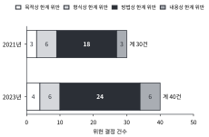
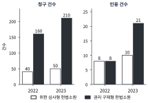
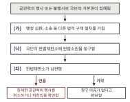
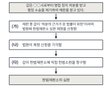

① 국민의 자유와 권리는 헌법에 열거되지 아니한 이유로 경시되지 아니한다. ② 국민의 모든 자유와 권리는 국가 안전 보장·질서 유지 또는 공공복리를 위하여 필요한 경우에 한하여 법률로써 제한할 수 있으며, 제한하는 경우에도 자유와 권리의 본질적인 내용을 침해할 수 없다.
<보 기>
ㄱ. ①은 헌법에 열거되지 않은 권리도 보호의 대상이 될 수 있음을 뒷받침한다. ㄴ. ①에 따라 헌법에 열거되지 않은 권리는 어떤 경우에도 제한할 수 없다. ㄷ. ②에 따르면 기본권은 법률로써 제한할 수 있지만 본질적인 내용은 침해할 수 없다. ㄹ. ②에 따르면 국가 기관은 필요하다고 판단하면 법률 없이도 기본권을 제한할 수 있다.
①ㄱ, ㄴ
②ㄱ, ㄷ
③ㄴ, ㄷ
④ㄷ, ㄹ
⑤ㄱ, ㄷ, ㄹ
02
(가), (나)에 대한 설명으로 옳은 것은?
(가) 교육부 장관이 고시(법률이 아님)만으로, 학교의 면학 분위기 유지를 이유로 학생의 두발 길이를 전국적으로 제한하였다. (나) 국회가 법률로, 면학 분위기 유지를 이유로 모든 학생의 두발을 일정 길이 이하로 제한하고 이를 어기면 예외 없이 퇴학시키도록 하였다. 학칙에 따른 지도와 경고만으로도 같은 목적을 달성할 수 있다.
①두 사례 모두 제한의 목적은 정당하다고 볼 수 있으나, (가)는 형식상 한계를, (나)는 방법상 한계를 벗어났다.
②두 사례 모두 제한의 목적이 정당하지 않아 목적상 한계를 벗어났다.
③두 사례 모두 법률에 근거하였으므로 형식상 한계를 충족하였다.
④(가)는 내용상 한계를, (나)는 목적상 한계를 벗어났다.
⑤(가)는 방법상 한계를, (나)는 형식상 한계를 벗어났다.
03
표는 기본권 제한 조치 (가)~(라)의 한계 충족 여부를 나타낸 것이다. 이에 대한 설명으로 옳은 것만을 <보기>에서 고른 것은? (자료는 가상이다.)
기본권 제한 조치의 한계 충족 여부
구분
목적상
형식상
방법상
내용상
(가)
충족
충족
충족
충족
(나)
충족
위반
위반
충족
(다)
위반
충족
위반
충족
(라)
충족
충족
위반
위반
<보 기>
ㄱ. (가)는 제37조 제2항의 요건을 모두 갖춘 조치이다. ㄴ. (나)는 법률을 제정해 근거를 마련하기만 하면 모든 한계를 충족하게 된다. ㄷ. (다)는 목적이 정당하지 않으므로 다른 한계의 충족 여부와 관계없이 헌법에 부합하지 않는다. ㄹ. (라)는 기본권의 본질적인 내용이 침해되지 않았으므로 방법상 한계만 문제 된다.
①ㄱ, ㄴ
②ㄱ, ㄷ
③ㄴ, ㄹ
④ㄷ, ㄹ
⑤ㄱ, ㄴ, ㄹ
04
표는 기본권 제한 조치 A~E를 제37조 제2항에 따라 단계별로 판단한 결과이다. 이에 대한 설명으로 옳은 것만을 <보기>에서 고른 것은? (단, 표의 ‘–’는 앞 단계에서 위반이 확인되어 판단하지 않았음을 뜻하며, E는 전체적으로 헌법에 부합하지 않는다고 판단되었다.)
단계별 판단 결과 (목적상 → 형식상 → 방법상 → 내용상)
구분
목적상
형식상
방법상
내용상
A
○
○
×
(가)
B
○
(나)
–
–
C
×
–
–
–
D
○
○
○
○
E
○
○
○
(다)
<보 기>
ㄱ. (가)에는 ‘–’가 들어간다. ㄴ. (나)에는 ‘×’가 들어가며, B는 법률에 근거하지 않은 조치이다. ㄷ. (다)에는 ‘○’가 들어간다. ㄹ. A~E 중 제37조 제2항의 요건을 모두 충족한 것은 D뿐이다.
국회에서 ‘공원 내 드론 비행 제한’ 법률안 두 가지가 논의되었다. 갑안: 안전사고를 예방하기 위해 사람이 많은 시간대에만 공원에서의 드론 비행을 제한하고, 사전 허가를 받으면 예외를 허용한다. 을안: 안전사고를 예방하기 위해 전국 모든 공원에서 연중 드론 비행을 일절 금지한다.
<보 기>
ㄱ. 두 안 모두 안전 확보라는 정당한 목적을 지닌다고 볼 수 있다. ㄴ. 두 안 모두 국회가 제정하는 법률이므로 형식상 한계를 충족한다. ㄷ. 을안은 갑안보다 방법상 한계를 벗어날 가능성이 더 크다. ㄹ. 갑안은 예외를 허용하므로 목적상 한계를 벗어난다.
①ㄱ, ㄴ
②ㄴ, ㄷ
③ㄷ, ㄹ
④ㄱ, ㄴ, ㄷ
⑤ㄱ, ㄷ, ㄹ
06
그림은 기본권을 제한하는 법률에 대한 위헌 결정을 제37조 제2항의 네 가지 한계 중 어느 것을 벗어났는지에 따라 분류한 것이다. 이에 대한 설명으로 옳은 것만을 <보기>에서 고른 것은? (자료는 가상이다.)

<보 기>
ㄱ. 두 해 모두 위헌 결정 사유 중 가장 많은 것은 방법상 한계 위반이다. ㄴ. 방법상 한계 위반이 차지하는 비율은 2021년이 2023년보다 높다. ㄷ. 내용상 한계 위반 건수는 2023년이 2021년의 2배이다. ㄹ. 형식상 한계 위반이 차지하는 비율은 2023년이 2021년보다 높다.
①ㄱ, ㄴ
②ㄱ, ㄷ
③ㄴ, ㄹ
④ㄷ, ㄹ
⑤ㄱ, ㄴ, ㄷ
07
(가)~(다)에 대한 설명으로 옳은 것만을 <보기>에서 고른 것은?
(가) 국회가 법률로, 감염병 확산을 막기 위해 일정 기간 특정 지역 주민의 이동을 제한하였다. (나) 국회가 법률로, 선거의 공정성을 위해 공무원의 선거 운동을 제한하였다. (다) 국회가 법률로, 재정 여건을 이유로 생계 지원 대상의 범위를 조정하였다.
<보 기>
ㄱ. (가)는 자유권과 관련된 제한이다. ㄴ. (나)는 국민의 정치 참여와 관련된 제한이다. ㄷ. (다)는 사회권과 관련된 조치이므로 법률로는 조정할 수 없다. ㄹ. (가)~(다)가 헌법에 부합하려면 각각 제37조 제2항의 요건을 갖추어야 한다.
①ㄱ, ㄴ
②ㄴ, ㄷ
③ㄷ, ㄹ
④ㄱ, ㄴ, ㄹ
⑤ㄱ, ㄷ, ㄹ
08
사례에 대한 설명으로 옳은 것만을 <보기>에서 고른 것은?
갑은 오래전 인터넷에 올린 글의 삭제를 요구하였으나, 사이트 운영자는 “잊힐 권리는 헌법에 명시되어 있지 않다.”며 거부하였다. 갑은 헌법 제10조와 제37조 제1항을 근거로 권리를 주장하였다. 한편 국회는 일정한 공적 기록은 삭제 요청을 받아들이지 않도록 법률로 제한하는 안을 마련하고 있다.
<보 기>
ㄱ. 운영자의 거부 이유는 제37조 제1항의 취지와 어긋난다. ㄴ. 갑이 제10조를 근거로 든 것은 인간의 존엄과 가치, 행복 추구권이 기본권의 이념적 기초이기 때문이다. ㄷ. 국회의 안은 제한의 목적·방법·내용이 정당한지 제37조 제2항에 따라 따져 보아야 한다. ㄹ. 잊힐 권리는 헌법에 열거되지 않았으므로 법률로도 제한할 수 없다.
①ㄱ, ㄴ
②ㄱ, ㄷ
③ㄴ, ㄹ
④ㄷ, ㄹ
⑤ㄱ, ㄴ, ㄷ
09
(가)~(다)에 해당하는 국가 기관을 바르게 연결한 것은?
(가) 법률을 제정하고 국가의 중요한 일에 대한 국민의 의사를 모아 결정한다. (나) 법률을 집행하고 국가의 정책을 실행한다. (다) 법을 적용하여 분쟁을 해결하고 침해된 권리를 구제하는 재판을 한다.
①(가) 국회 – (나) 정부 – (다) 법원
②(가) 법원 – (나) 정부 – (다) 국회
③(가) 정부 – (나) 법원 – (다) 국회
④(가) 정부 – (나) 국회 – (다) 법원
⑤(가) 국회 – (나) 법원 – (다) 정부
10
(가)~(다)는 인권 관련 문서의 취지를 요약한 것이다. 이에 대한 설명으로 옳은 것만을 <보기>에서 고른 것은?
(가) 어떤 자유민도 적법한 재판에 의하지 않고는 체포되거나 구금되지 않는다. (1215년 영국) (나) 성인 남성 모두에게 보통 선거권을 주어야 한다. (1838년 영국 노동자들의 요구서) (다) 경제생활의 질서는 모든 사람에게 인간다운 생활을 보장하는 것을 목적으로 한다. (1919년 독일 헌법)
<보 기>
ㄱ. (가)는 국가 권력이 개인을 함부로 구금하지 못하도록 제한하는 내용으로, 이후 자유권 발달의 토대가 되었다. ㄴ. (나)는 정치에 참여할 권리를 넓히려는 요구로, 참정권의 확대와 관련된다. ㄷ. (다)는 국가가 개인의 영역에 간섭하지 않을 것을 핵심으로 하는 자유권적 내용이다. ㄹ. (가), (나), (다)는 제정 시기가 (가) → (나) → (다) 순이다.
①ㄱ, ㄴ
②ㄴ, ㄷ
③ㄷ, ㄹ
④ㄱ, ㄴ, ㄹ
⑤ㄱ, ㄷ, ㄹ
11
(가)~(마) 중 국가에 적극적인 행위(급부나 구제)를 요구하는 성격이 강한 권리를 행사한 사례만을 고른 것은?
(가) 갑은 회사가 성별을 이유로 자신을 승진에서 제외하자 차별 없이 대우해 달라고 요구하였다. (나) 을은 경찰이 법률상 근거 없이 자신을 체포했다며 국가 기관의 간섭을 배제해 달라고 요구하였다. (다) 병은 공무원의 위법한 직무 집행으로 재산 손해를 입자 국가에 배상을 청구하였다. (라) 정은 질병으로 일을 할 수 없어 국가에 최소한의 생계 보호를 요청하였다. (마) 무는 선거일에 투표소에서 투표하여 지역의 대표를 뽑았다.
①(다), (라)
②(가), (나)
③(라), (마)
④(나)
⑤(나), (마)
12
(가)~(라)의 상황에서 이용할 수 있는 기관을 바르게 연결한 것은?
(가) 행정 기관의 위법·부당한 처분에 대한 고충을 제기하려 한다. (나) 장애를 이유로 채용에서 차별을 받았다며 조사와 구제를 요청하려 한다. (다) 재판 중 적용되는 법률이 헌법에 위반된다고 생각하여 위헌 법률 심판 제청을 신청하려 한다. (라) (다)의 신청이 기각되자 마지막으로 헌법소원을 청구하려 한다.
①(가) 국민권익위원회 – (나) 헌법재판소 – (다) 법원 – (라) 국가인권위원회
②(가) 국민권익위원회 – (나) 국가인권위원회 – (다) 헌법재판소 – (라) 법원
③(가) 국민권익위원회 – (나) 국가인권위원회 – (다) 법원 – (라) 헌법재판소
④(가) 법원 – (나) 국가인권위원회 – (다) 국민권익위원회 – (라) 헌법재판소
⑤(가) 국가인권위원회 – (나) 국민권익위원회 – (다) 법원 – (라) 헌법재판소
13
권력 분립에 대해 옳게 말한 학생만을 고른 것은?
갑: 권력 분립은 국가 권력을 여러 기관에 나누어, 한 기관이 권력을 독점하고 남용하는 것을 막기 위한 거야. 을: 기관들이 서로 전혀 관여하지 못하도록 완전히 분리해야 제대로 된 권력 분립이야. 병: 나뉜 권력이 서로 견제하고 균형을 이루어야 권력 분립이 실제로 제 기능을 해. 정: 권력 분립은 궁극적으로 국민의 자유와 권리를 보장하기 위한 제도야.
①갑, 병
②갑, 을
③갑, 병, 정
④을, 정
⑤을, 병, 정
14
그림은 ○○국의 헌법소원을 위헌 심사형과 권리 구제형으로 나누어 청구 건수와 인용(받아들여진) 건수를 나타낸 것이다. 이에 대한 설명으로 옳은 것만을 <보기>에서 고른 것은? (자료는 가상이다.)

<보 기>
ㄱ. 2022년 대비 2023년 청구 건수의 증가율은 위헌 심사형이 권리 구제형보다 높다. ㄴ. 위헌 심사형 헌법소원의 인용률은 두 해 모두 같다. ㄷ. 권리 구제형 헌법소원의 인용률은 2023년이 2022년의 2배이다. ㄹ. 2023년 전체 인용 건수는 위헌 심사형이 권리 구제형보다 많다.
①ㄱ, ㄴ
②ㄴ, ㄷ
③ㄷ, ㄹ
④ㄱ, ㄷ, ㄹ
⑤ㄴ, ㄷ, ㄹ
15
그림은 공권력의 행사로 기본권을 침해당한 국민이 헌법재판소에 구제를 요청하는 절차를 나타낸 것이다. 이에 대한 설명으로 옳은 것은?

①(나)는 국가 기관만이 청구할 수 있다.
②(나)는 법률의 위헌 여부가 재판의 전제가 된 경우에만 청구할 수 있다.
③(가)를 거쳐도 구제받지 못한 경우에 (나)를 청구할 수 있고, (다)의 주체는 헌법재판소이다.
④(다)는 법원이 담당하며, 법원이 공권력 행사의 위헌 여부를 최종 결정한다.
⑤(가)를 거치지 않고도 어떤 경우에나 (나)를 청구할 수 있다.
16
표는 헌법재판소의 세 가지 심판 (가)~(다)를 비교한 것이다. 이에 대한 설명으로 옳은 것만을 <보기>에서 고른 것은?
헌법재판소의 심판 비교
구분
청구(제청) 주체
심판 대상
청구 전에 필요한 절차
(가)
법원
법률
재판 진행 중일 것
(나)
국민
(라)
다른 법적 구제 절차를 거침
(다)
국민
법률
법원에 제청을 신청했으나 기각됨
<보 기>
ㄱ. (가)는 법원이 헌법재판소에 제청하는 위헌 법률 심판이다. ㄴ. (라)에는 ‘공권력의 행사 또는 불행사’가 들어간다. ㄷ. (다)는 공권력의 행사로 침해된 기본권의 구제를 위한 권리 구제형 헌법소원이다. ㄹ. (가)와 (다)는 모두 법률의 위헌 여부가 재판의 전제가 된다.
①ㄱ, ㄴ
②ㄴ, ㄷ
③ㄷ, ㄹ
④ㄱ, ㄴ, ㄹ
⑤ㄴ, ㄷ, ㄹ
17
(가)~(마)에 해당하는 제도적 장치를 바르게 연결한 것은?
(가) 국가의 모든 활동은 국회가 제정한 법률에 근거해야 하고, 법률의 내용도 헌법에 합치해야 한다. (나) 국가 권력을 입법·행정·사법으로 나누어 서로 견제하게 한다. (다) 국민이 선거로 대표를 뽑고, 여러 정당이 경쟁하며 정권이 교체될 수 있다. (라) 법률이 헌법에 위반되는지를 심판하여 기본권을 보호한다. (마) 국가의 주권이 국민에게 있고 모든 권력이 국민으로부터 나온다.
①(가) 법치주의 – (나) 권력 분립 – (다) 국민 주권 – (라) 헌법재판소 – (마) 민주적 선거·복수 정당제
②(가) 법치주의 – (나) 헌법재판소 – (다) 민주적 선거·복수 정당제 – (라) 권력 분립 – (마) 국민 주권
③(가) 법치주의 – (나) 권력 분립 – (다) 민주적 선거·복수 정당제 – (라) 헌법재판소 – (마) 국민 주권
④(가) 국민 주권 – (나) 권력 분립 – (다) 민주적 선거·복수 정당제 – (라) 헌법재판소 – (마) 법치주의
⑤(가) 권력 분립 – (나) 법치주의 – (다) 민주적 선거·복수 정당제 – (라) 헌법재판소 – (마) 국민 주권
18
그림은 갑이 겪은 일을 시간 순서로 나타낸 것이다. (가)~(다)에 대한 설명으로 옳은 것만을 <보기>에서 고른 것은?

<보 기>
ㄱ. (가)는 위헌 법률 심판 제청을 신청하는 단계이다. ㄴ. (나)에서 법원이 기각하면 갑은 더 이상 어떤 방법으로도 법률의 위헌 여부를 다툴 수 없다. ㄷ. (다)는 위헌 심사형 헌법소원에 해당한다. ㄹ. (다)는 공권력의 행사로 침해된 기본권을 구제받기 위한 권리 구제형 헌법소원이다.
①ㄱ, ㄴ
②ㄱ, ㄷ
③ㄴ, ㄹ
④ㄷ, ㄹ
⑤ㄱ, ㄷ, ㄹ
19
다음 글을 바탕으로 (가)~(라)를 평가한 설명으로 옳은 것만을 <보기>에서 고른 것은?
[롤스의 주장을 요약·재구성한 것] 시민 불복종은 평등한 기본적 자유의 원칙이나 공정한 기회 균등의 원칙이 명백히 침해되었을 때, 사회의 다수가 공유하는 정의관에 호소하여 법이나 정책의 변화를 요구하는 공적이고 비폭력적인 양심적 위법 행위이다. 이를 행하는 사람은 법에 대한 충실성의 한계 안에서 행동하며 법적 결과를 받아들인다. (가) 갑 등은 재산 수준에 따라 일부 시민의 투표권을 제한한 법에 항의하여, 공개적으로 불법 집회를 열고 체포된 뒤 재판을 받았다. (나) 을 등은 도로 건설 계획이 불편하다며 한밤중에 몰래 공사 장비를 파손하고 달아났다. (다) 병 등은 출신 지역에 따라 입학 자격을 제한한 법이 공정한 기회 균등에 어긋난다며, 폭력을 쓰지 않고 공개적으로 불법 농성을 벌이다 처벌을 받았다. (라) 정은 자신의 세금 부담이 크다며 사적 이익을 이유로 공개적으로 납세를 거부하고 재판을 받았다.
<보 기>
ㄱ. (가)는 평등한 기본적 자유의 침해에 항의하는 행위로 시민 불복종으로 볼 수 있다. ㄴ. (나)는 공적이고 비폭력적이지 않으므로 시민 불복종이 아니다. ㄷ. (다)는 불법 행위를 했으므로 공정한 기회 균등을 요구하더라도 시민 불복종이 될 수 없다. ㄹ. (라)는 법적 결과를 받아들였으므로 다수의 정의관에 호소하는지와 무관하게 시민 불복종이다.
①ㄱ, ㄴ
②ㄱ, ㄷ
③ㄴ, ㄷ
④ㄷ, ㄹ
⑤ㄱ, ㄴ, ㄹ
20
롤스의 입장에서 (가)~(라)를 분류한 것으로 옳은 것은?
(가) 주민들이 공청회에서 의견을 발표하고 지방 의회에 청원서를 제출하였다. (나) 주민들이 헌법재판소에 헌법소원을 청구하였다. (다) 주민들이 신고 없이 공개적으로 도로에서 행진하며 불복종의 이유를 밝히고 처벌을 받겠다고 선언하였다. 폭력은 쓰지 않았다. (라) 일부 주민이 한밤중에 몰래 공사 장비에 불을 질렀다.
①(가) 시민 불복종 – (나) 제도적 권리 구제 – (다) 합법적 시민 참여 – (라) 시민 불복종이 아닌 위법 행위
②(가) 제도적 권리 구제 – (나) 합법적 시민 참여 – (다) 시민 불복종 – (라) 시민 불복종이 아닌 위법 행위
③(가) 합법적 시민 참여 – (나) 시민 불복종 – (다) 제도적 권리 구제 – (라) 시민 불복종이 아닌 위법 행위
④(가) 합법적 시민 참여 – (나) 제도적 권리 구제 – (다) 시민 불복종이 아닌 위법 행위 – (라) 시민 불복종
⑤(가) 합법적 시민 참여 – (나) 제도적 권리 구제 – (다) 시민 불복종 – (라) 시민 불복종이 아닌 위법 행위